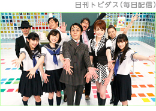
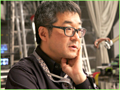
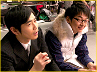
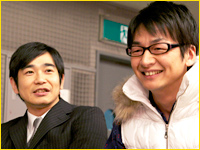

N.O.M2月号 『いつの間にテレビ』で多彩な3Dコンテンツを楽しもう
1. 「いつの間に通信」で楽しめる ニンテンドー3DSダウンロードソフト
『いつの間にテレビ』でおなじみの『日刊トビダス』について、前回の特集に引き続き、東京・お台場にあるフジテレビのスタジオにお邪魔して、福原プロデューサーや出演者のみなさんにお話をうかがいました。
『日刊トビダス』では、コントの中から誕生したアイドルグループがCDデビューしたり、ホームページやブログなどで積極的に視聴者のみなさんとコミュニケーションを図ったりと、映像の配信にとどまらない、さまざまな試みが行われているようです。

制作スタッフインタビュー
――
『日刊トビダス』の配信開始から約半年、前回取材させていただいたときから約3カ月ほど経ちますが、番組制作のうえでの変化はありますか？
かなりいろいろな試みをされていますよね。
コントの中に登場していたアイドルグループ「NDS48」の曲を作ったんです。あくまでも企画モノなんですけど、このあと3DでPVの撮影もする予定です。
最初はネタのつもりで、軽い気持ちだったんですけど、やっていくうちにだんだん本格的になってきて。『恋はケツカッチン』って曲で、shu-tさんというユーザー参加型の動画共有サイトなどで活躍されている方に作曲をお願いしたんですが、これがホントにいい曲で、ちゃんとしなきゃマズイなと（笑）。

あとダンスも、有名な振り付けチームの「振付稼業air:man（エアーマン）」さんにお声がけして。3Dを意識して、奥行きを使ったフォーメーションとか、たくさん使ってくださいとお願いしました。
――
楽曲は現在『日刊トビダス』のホームページで無料公開されていますよね。
※1
ヤマハ株式会社が開発したデスクトップミュージック用の音声合成技術。中でも、この技術を用いた『初音ミク』（クリプトン・フューチャー・メディア）は、バーチャルアイドル的な人気を博している。
※2
NDS48「恋はケツカッチン」のPVは『ニンテンドービデオ』で配信予定。
――
今後の展開などについてのお考えを。
ニンテンドー3DS本体の機能だけでなく、ウェブ上のツールなども活用すれば、もっと可能性が広がるかなと。イベントなどもやってみたいですし、「ニコニコ生放送」や「Ustream」などのインターネットを利用した生放送や『いつの間にテレビ』が基本ですが、ニンテンドー3DSを「飛び出す」ようなこともやってみたいですね。
出演者からのコメント
特にテロップが飛び出してきたりする演出って、ドラマとかではあまりないですし、『日刊トビダス』ならではの部分なのかなと思います。自分でも前後の動きを意識するようにしています。でも、いざ撮影に入ってしまうと忘れがちなので、あまり偉そうには言えないんですけど（笑）。
いまコントの中で「NDS48」というアイドルをやっているんですけど、一人だけ年上なので保護者みたいな感じで。
（福原P「全然違和感ないし、むしろセンターですよ！」）
普段はフリーアナウンサーなので、それこそ政治家や経営者、学者のみなさんへのインタビューみたいな結構お固い仕事が多いんですが、『日刊トビダス』ではホントに幅広くいろいろなことをたくさん経験させていただいて、楽しませていただいています。
出演者からのコメント
――
最初に出演のお話が来たときは？
浜谷
すごいなあと。ニンテンドー3DSで、できあがりも楽しみだし。不思議な感じでしたね。
神田
白羽の矢が立ったなと（一同・笑）。初めての試みだというのと、しかもコントってことで、それに使ってもらえるって、「これはハマカーン来てる！」と勝手に思っちゃいました。
浜谷
やっぱりゲームのイメージがありましたから、それでテレビみたいに映像が見られるというので。
――
自分たちの映像を見られてどう思われましたか？
神田
あ、ちょっとこれはスゲエって。
浜谷
これはヒマつぶしになるなと（一同・笑）。
神田
普通の平面の画面と比べると、若干コントの間がヘタでももつ感じがするんですよね。
浜谷
舞台とかでもそうですけど、奥行きの動きとかわかりますからね。無駄に動いたりして。

――
やはり撮影の際は3Dを意識されますか？
浜谷
そうですね。
神田
ここで一歩前に出てくださいとか、ここで手を前に出してくださいとか、それを意図して演出もつけていただいていますし、カメラとかも普通ではありえないくらい長回しだし。僕らもいろいろ新しく勉強させていただいてます。
浜谷
金剛地さんとか、セリフが多い方は大変だと思います。
神田
僕らは比較的セリフ少ないんですけど、それなのに噛んじゃったりすると地獄ですね（笑）。ほかのみなさんが長セリフうまくいったのに、みたいな。
――
自分でこれはうまくいったな、と思ったことは？
浜谷
一度コントの中で女装をしまして。それを3Dで見たときは、扉が開いたというか、飛び出しちゃいましたね。
神田
何ちょっと「トビダス」に引っ掛けてるの（一同・笑）。自分はNDS48の4人が次々にボケていくのを、ツッコミでテンポよく回せたときですね。彼女たちは芸人じゃないんですけど、うまく拾えたなと。自己満足なんですけど（笑）。

浜谷
ウケるかシュールかのどちらかになるんで、そんなにスベる緊張感があるわけじゃないんですけど。基本的にはユルい感じで。
――
今後の目標は？
神田
みなさんが毎日まず朝一で開いてチェックしてくれるようになるのが目標ですね。
浜谷
ニンテンドー3DSを持っている人、全員に見てもらえるように。あと、『日刊トビダス』からいろいろ派生していくとうれしいですね。ゲームとか。
神田
また大それたことを……あなた考えなさいよ、企画書書いて。
浜谷
僕らを操作したりとか。
神田
ポリゴンで作るのかよ！
浜谷
育成ゲームとか。
神田
そういうのは山ほどあるんだよ。もういいよ！（一同・笑）